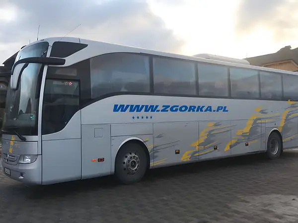
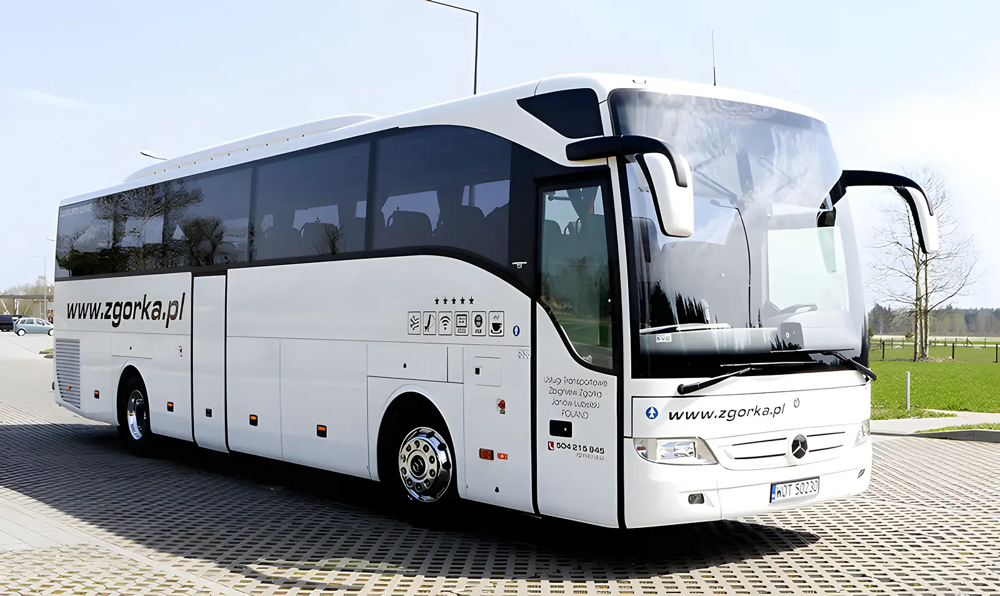
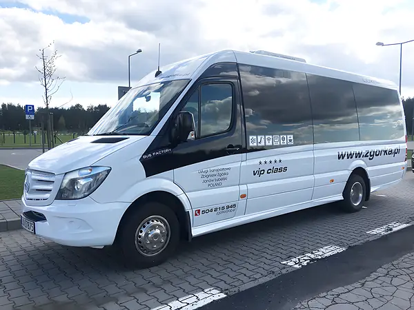
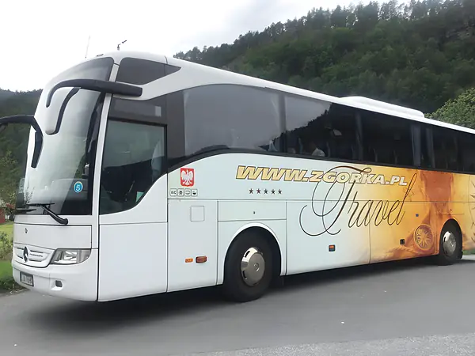
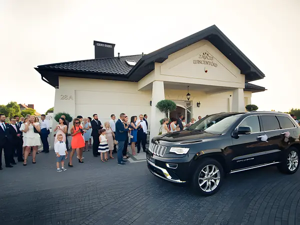

Wynajem autokarów
Mercedes Tourismo i Setra od 50 do 56 miejsc, z klimatyzacją, WC, barkiem i video. Wyjazdy jednodniowe i kilkudniowe, w kraju i za granicą.

Od 1995 roku wozimy wycieczki szkolne, firmy, gości weselnych i pasażerów naszych linii, po kraju i po Europie. Autokary do 56 miejsc, busy 20-osobowe i Jeep do ślubu.
Biuro Turystyczne500 450 196
Każdy nasz pojazd ma licencję na transport międzynarodowy, więc tym samym autokarem pojadą Państwo na wycieczkę po Lubelszczyźnie i za granicę.

Mercedes Tourismo i Setra od 50 do 56 miejsc, z klimatyzacją, WC, barkiem i video. Wyjazdy jednodniowe i kilkudniowe, w kraju i za granicą.

Mercedesy Sprinter 518 i 519 CDI na 20 pasażerów oraz Sprintery 9-osobowe. Dla mniejszych grup, na transfery z lotniska i przewozy VIP.

Od 2009 roku prowadzimy Biuro Turystyczne: wycieczki szkolne i wyjazdy zorganizowane dla firm, w kraju i za granicą. Program układamy pod Państwa grupę.

Jeep Grand Cherokee dla Pary Młodej, z kierowcą. Dla gości weselnych podstawimy autokar albo bus, więc cały dzień ślubu załatwią Państwo jednym telefonem.
Pojazdy, którymi jeździmy na co dzień. Zdjęcia pokazują nasze autokary i busy z zewnątrz i w środku.
| Mercedes Tourismo | 56 + 1 miejsc |
| Setra 315 HDH | 54 + 1 miejsc |
| Mercedes Tourismo | 52 + 1 miejsc |
| Setra 315 GT-HD | 50 + 1 miejsc |
| Mercedes Sprinter 518 CDI | 20 + 1 miejsc |
| Mercedes Sprinter 519 CDI | 20 + 1 miejsc |
| Mercedes Sprinter | 9 miejsc |
| Jeep Grand Cherokee | 5 miejsc |
W każdym autokarze: klimatyzacja, WC, barek, video, siedzenia odchylane i rozsuwane. Wszystkie pojazdy mają licencję na transport międzynarodowy.
Kursujemy na liniach do Janowa Lubelskiego z Błażka, Wierzchowisk, Modliborzyc i Batorza, dowozimy też dzieci do szkół. Informacja o rozkładzie: 664 170 539
Elegancki, czarny Jeep z kierowcą zawiezie Parę Młodą do kościoła i na wesele. Na co dzień jeździ też na transfery z lotniska i przewozy VIP, dla pięciu osób.
Rezerwacja terminu504 215 945
Firmę Usługi Transportowe Przewóz Osób Zgórka Zbigniew założyliśmy w 1995 roku w Wolicy Pierwszej. Od początku wozimy pasażerów po kraju i za granicą, a o bezpieczną podróż dbają doświadczeni kierowcy.
Jeździmy na liniach regularnych Batorz - Janów Lubelski i Błażek - Janów Lubelski i dowozimy dzieci do szkół. W kwietniu 2009 roku otworzyliśmy Biuro Turystyczne, które organizuje wycieczki szkolne i wyjazdy dla firm, zawsze przygotowane indywidualnie.
Zapraszamy do korzystania z naszych usług.
Zbigniew Zgórkawłaściciel
Najszybciej przez telefon. Każda sprawa ma swój numer, żeby od razu trafić do właściwej osoby.
Usługi Transportowe Zbigniew Zgórka
Wolica Pierwsza 5, 23-310 Modliborzyce
woj. lubelskie, NIP 862-100-36-77
Przedsiębiorca uzyskał subwencję finansową w ramach programu rządowego „Tarcza Finansowa 2.0 Polskiego Funduszu Rozwoju dla Mikro, Małych i Średnich Firm”, udzieloną przez PFR SA.